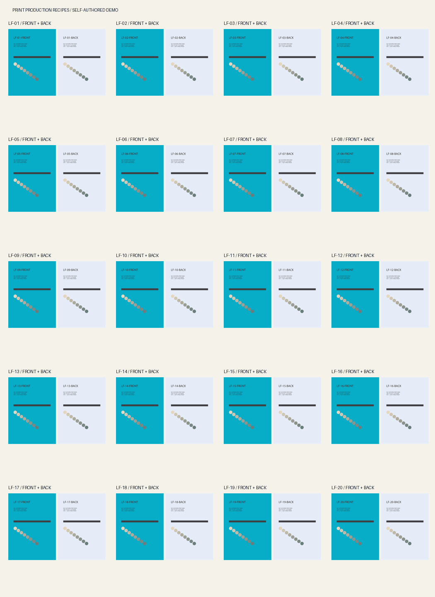

ILLUSTRATOR · SELF-AUTHORED DEMO · v0.1.0
큰 파일을 정리하고
앞뒤가 맞게 나누기.
다운로드한 디자이너를 위한 실행 안내입니다. Illustrator 안에서 한·영 대화창을 실행합니다. 이 페이지 자체는 파일을 처리하지 않고, 외부로 전송하지 않습니다.
01. Illustrator에서 실행
파일 → 스크립트 → 기타 스크립트에서 scripts/Print_Recipes.jsx를 선택하세요. scripts/lib 폴더도 함께 보관합니다.
02. 먼저 더미로 연습
‘더미 리플렛 20종 만들기’를 고르면 직접 만든 40면 AI가 열립니다. 파일·고객 자료를 준비하지 않아도 됩니다.
03. 축소하거나 분리
도구를 다시 실행하고 ‘AI 사본 축소’ 또는 ‘독립 그룹 AI + PDF 분리’를 고릅니다. 기본 5종이면 앞뒤 10면씩 네 파일입니다.
04. 출력까지 확인
결과 AI를 다시 열고 앞뒤 ID·방향·도련을 확인하세요. 검토 PDF는 154×216mm 도련 포함 캔버스이며 별도 A5 TrimBox가 없습니다.
시작 전 확인
실제 Illustrator 30.5.1에서 더미 축소·AI/PDF 분리와 120회 면 비교를 수행했습니다. 구조 검사 20개 통과. 실물 교정·다른 버전·macOS는 미검증입니다.
Compact the file.
Keep every pair together.
A download-and-run guide for designers. The bilingual dialog runs inside Illustrator. This page is a reader: it neither processes files nor sends them externally.
01. Run in Illustrator
File → Scripts → Other Script → scripts/Print_Recipes.jsx. Keep scripts/lib alongside the script.
02. Try the dummy first
Choose ‘Create 20 dummy duplex leaflets’. A self-authored 40-side AI opens. No client files are needed.
03. Compact or split
Run again: compact an AI copy or split grouped AI + PDF batches. Five variants per batch means four ten-side files.
04. Verify the output
Reopen AI files and inspect side IDs, orientation, and actual bleed. Review PDFs are 154×216mm bleed canvases without a separate A5 trim-size TrimBox.
Three practical recipes
Compact large AI · Split duplex variants · Delivery preflight
Full quick start · Public report · Actual 40-side PDF · Pairing ledger
Before you start
Tested compaction and native AI/PDF splitting in Illustrator 30.5.1, with 120 rendered comparisons and 20 structural checks passed. Physical proofs, other versions, and macOS are unverified.
